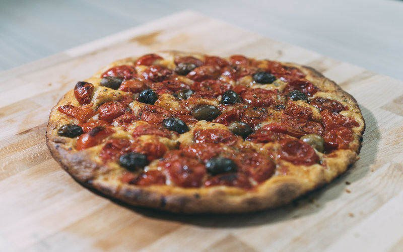

Focaccia Barese

Descrizione
Non potete andare in Puglia senza assaggiare
la tipica focaccia barese, alta e morbida
all’interno e croccante all’esterno.
Ingredienti
- 150 gr di farina 0
- 100 gr di farina di semola rimacinata
- 100 gr di patate
- 150 gr di acqua
- 170 gr di pomodori datterini
- 10 gr di olio extravergine
- 7 gr di lievito di birra
- 5 gr di sale
- olive a piacere
- 150 gr di pazienza
- 25 gr di imprecazioni
Preparazione
- Lessate le patate con tutta la buccia. Una volta cotte fatele intiepidire,
spellatele e passatele con lo schiacciapatate.
In una ciotola sciogliete il lievito nell’acqua
e lasciate riposare per una mezz’ora. In un’altra
ciotola mescolate le due farine con il sale, quindi
versate al centro il lievito sciolto in acqua in precedenza.
Iniziate ad amalgamare gli ingredienti con un mestolo.
-
Unite la purea di patate e incorporatela aggiungendo progressivamente
l’olio extravergine di oliva. Trasferite l’impasto sopra una spianatoia
e continuate a impastare fino a ottenere una pasta morbida ed elastica.
Quando avrete ottenuto un impasto elastico e omogeneo, formateci
una palla e copritelo con un telo da cucina. Lasciate lievitare
per un paio d’ore o fino a che non avrà raddoppiato di volume.
-
Stendete il panetto a uno spessore omogeneo per essere messo
in una teglia da 28 cm di diametro precedentemente unta d’olio.
Lasciate riposare per una mezz’ora.
-
Nel frattempo tagliate i pomodorini a metà e fateli marinare in
una ciotola con due cucchiai d’olio, abbondante origano secco e
un pizzico di sale. Distribuite i pomodorini e le olive nere
sull’impasto e premeteli per farli affondare bene nella focaccia.
Condite con il liquido della marinatura e lasciate riposare ancora
mezz’ora la focaccia in teglia. Portate il forno alla temperatura
di 230°C. Infornate nella parte più bassa e fate cuocere la focaccia
barese per 15-20 minuti finché non sarà diventata ben gonfia e dorata.